http://www.infoq.com/cn/presentations/cloud-services-architecture-practice-bsed-on-data-synchronization
[TOC]
野狗的数据同步理念
Wilddog是什么？
- 一个云端树形数据库
- 一个App的所有的数据存到一个大JSON中
- 事件驱动客户端
Schema-free 数据存储
- 树形数据库
- 像一颗Json树
- 面向聚合
- 数据之间的关系更直观
- 完美的与Url结合
- 每条数据都能通过url来唯一定位
- Path为key，key - value
基于野狗的应用架构是这样的
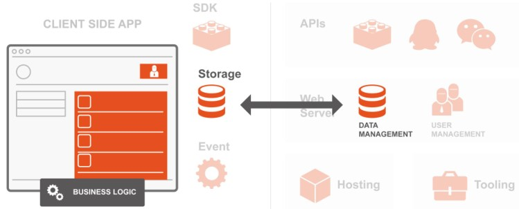
数据副本的同步
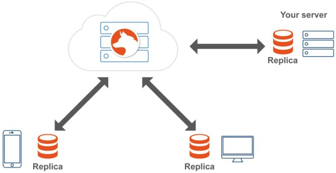
数据同步的基本模型
- 初始化慢同步
- 增量同步
- 本地 best-effort
- push op log
- 基于长连接
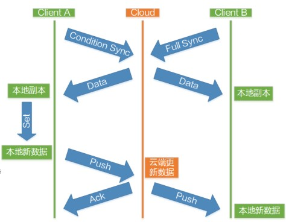
数据同步的架构演进
架构特点
v 0.1 架构框图
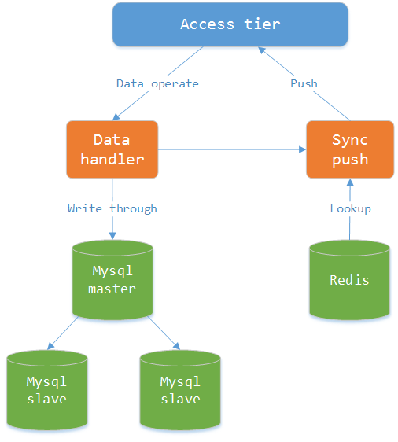
v0.2 架构框图
- 动态建库，app数据隔离
- Mongo 提升读写性能
- 副本集多活
- 机枪换导弹（批量Batch数据操作）
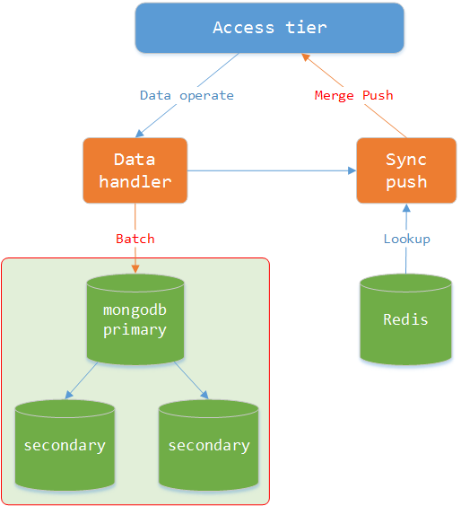
v0.3 架构框图
- appId - topic
- 大大提升写性能（写缓冲队列kafka）
- 类似Nagle减低写压力
- 读性能下降
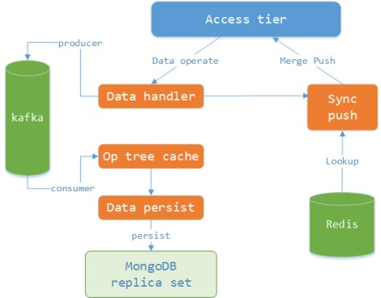
解决读的不一致问题
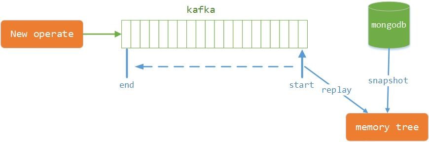
v 0.3.1 架构框图
- keys xxx* 引发的血案
- 需要Performance Monitoring
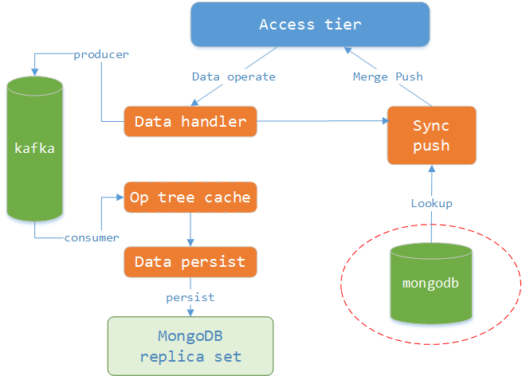
Performance Monitoring
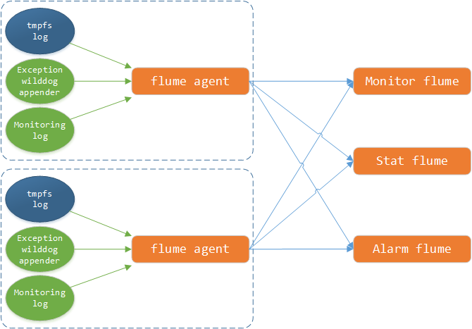
数据同步的细节问题
问题一 并发写
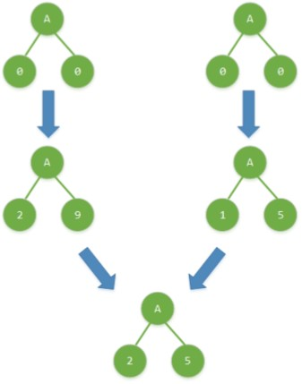
分布式树形锁
- 注意问题
- tryLock/release 需要2次交互
- 注册Lock的有效期
- 等待Lock超时
- 动态hash
- 连接异常时退化
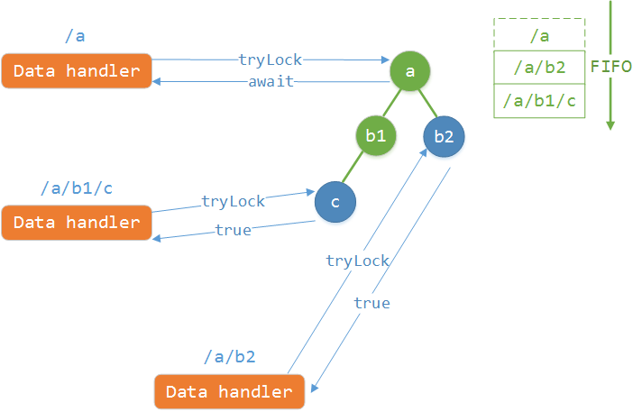
性能问题
- 吞吐量下降
- 每个app一个树形锁，单进程，终究有吞吐上限
- 任何操作，包括没有冲突操作，都需要先获得锁
- 主要性能的点
- 单次push sync量大，可以导致阻塞
- 异步push sync
令人恶心的架构诞生了
- 缩减了write操作的过程
- 保证云端与客户端一致性
- 太过复杂，不确定因素累加过多
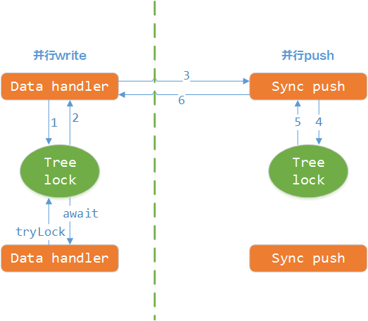